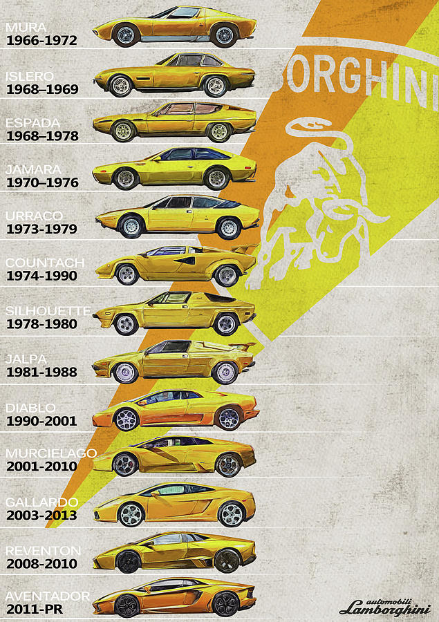

Automobili Lamborghini S.p.A. (/ˌlæmbərˈɡiːni/ LAM-bər-GHEE-nee, Italian: [autoˈmɔːbili lamborˈɡiːni]), usually referred to as Lamborghini or colloquially Lambo, is an Italian manufacturer of luxury sports cars and SUVs based in Sant'Agata Bolognese. The company is owned by the Volkswagen Group through its subsidiary Audi. Ferruccio Lamborghini (1916–1993), an Italian manufacturing magnate, founded Automobili Ferruccio Lamborghini S.p.A. in 1963 to compete with Ferrari. The company was noted for using a rear mid-engine, rear-wheel drive layout. Lamborghini grew rapidly during its first decade, but sales plunged in the wake of the 1973 worldwide financial downturn and the oil crisis. The firm's ownership changed three times after 1973, including a bankruptcy in 1978. American Chrysler Corporation took control of Lamborghini in 1987 and sold it to Malaysian investment group Mycom Setdco and Indonesian group V'Power Corporation in 1994. In 1998, Mycom Setdco and V'Power sold Lamborghini to the Volkswagen Group where it was placed under the control of the group's Audi division. New products and model lines were introduced to the brand's portfolio and brought to the market and saw an increased productivity for the brand. In the late 2000s, during the Great Recession, Lamborghini's sales dropped nearly 50%. Lamborghini currently produces the V10-powered Huracán, the Urus SUV powered by a twin-turbo V8 engine, and the Revuelto, a V12/electric hybrid, as of 2024. In addition, the company produces V12 engines for offshore powerboat racing. Lamborghini Trattori, founded in 1948 by Ferruccio Lamborghini, is headquartered in Pieve di Cento, Italy, and continues to produce tractors. Since 1973, Lamborghini Trattori has been a separate entity from the Lamborghini's automobile division.
Manufacturing magnate Italian Ferruccio Lamborghini founded the company in 1963 with the objective of producing a refined grand touring car to compete with offerings from established marques such as Ferrari. The company's first models, such as the 350 GT, were released in the mid-1960s. Lamborghini was noted for the 1966 Miura sports coupé, which used a rear mid-engine, rear-wheel drive layout. In 1963, Ferruccio Lamborghini, already an established industrialist who manufactured tractors, boilers, and air conditioners, founded Lamborghini Automobili on May 7, 1963. The company was headquartered in a purpose-built facility in Sant'Agata Bolognese. He surrounded himself with highly capable engineers and technicians: Giotto Bizzarrini designed the engine, Gian Paolo Dallara and Paolo Stanzani developed the chassis, and Franco Scaglione designed the bodywork. The first model, the 350 GTV, was not a success due to its futuristic style and remained a one-off prototype. The project was then handed over to the Milanese coachbuilder Touring, which created a more classic and sober design. The new car, named the 350 GT, was a fast and elegant two-seater grand tourer (according to Ferruccio's standards) and was the first series-produced car by Lamborghini. It achieved moderate sales success and was followed by the 400 GT (which benefited from an increased engine capacity) and the 400 GT 2+2, both presented in 1966. Lamborghini grew rapidly during its first ten years, but sales fell in the wake of the 1973 worldwide financial downturn and the oil crisis. Ferruccio Lamborghini sold the company to Georges-Henri Rossetti and René Leimer and retired in 1974. The company went bankrupt in 1978, and was placed in the receivership of brothers Jean-Claude and Patrick Mimran in 1980. The Mimrans purchased the company out of receivership by 1984 and invested heavily in its expansion. Under the Mimrans' management, Lamborghini's model line was expanded from the Countach to include the Jalpa sports car and the LM002 high-performance off-road vehicle. The Mimrans sold Lamborghini to the Chrysler Corporation in 1987. After replacing the Countach with the Diablo and discontinuing the Jalpa and the LM002, Chrysler sold Lamborghini to Malaysian investment group Mycom Setdco and Indonesian group V'Power Corporation in 1994. In 1998, Mycom Setdco and V'Power sold Lamborghini to the Volkswagen Group where it was placed under the control of the group's Audi division. New products and model lines were introduced to the brand's portfolio and brought to the market and saw an increased productivity for the brand Lamborghini. In the late 2000s, during the Great Recession, Lamborghini's sales dropped nearly 50%. In 2021, the CEO of Lamborghini said that by 2024 all its models will be hybrid.
The world of bullfighting is a key part of Lamborghini's identity.In 1962, Ferruccio Lamborghini visited the Seville ranch of Don Eduardo Miura, a renowned breeder of Spanish fighting bulls. Lamborghini was so impressed by the majestic Miura animals that he decided to adopt a raging bull as the emblem for the automaker he would open shortly.
After producing two cars with alphanumeric designations, Lamborghini once again turned to the bull breeder for inspiration. Don Eduardo was filled with pride when he learned that Ferruccio had named a car for his family and their line of bulls; the fourth Miura to be produced was unveiled to him at his ranch in Seville. The automaker would continue to draw upon the bullfighting connection in future years. The Islero was named for the Miura bull that killed the famed bullfighter Manolete in 1947. Espada is the Spanish word for sword, sometimes used to refer to the bullfighter himself. The Jarama's name carried a special double meaning; though it was intended to refer only to the historic bullfighting region in Spain, Ferruccio was concerned about confusion with the also historic Jarama motor racing track.After christening the Urraco after a bull breed, in 1974, Lamborghini broke from tradition, naming the Countach (/ˈkuːntɑːʃ/KOON-tahsh) not for a bull,[40] but for contacc (pronounced [kʊŋˈtɑtʃ]), a Piedmontese expletive.[40] Legend has it that Nuccio Bertone uttered the word in surprise when he first saw the Countach prototype, "Project 112".[41] The LM002 (LM for Lamborghini Militaire) sport utility vehicle and the Silhouette (named after the popular racing category of the time) were other exceptions to the tradition. The Jalpa of 1982 was named for a bull breed; Diablo, for the Duke of Veragua's ferocious bull famous for fighting an epic battle against El Chicorro in Madrid in 1869;[42][43][44] Murciélago, the legendary bull whose life was spared by El Lagartijo for his performance in 1879; Gallardo, named for one of the five ancestral castes of the Spanish fighting bull breed;[45] and Reventón, the bull that defeated young Mexican torero Félix Guzmán in 1943. The Estoque concept of 2008 was named for the estoc, the sword traditionally used by matadors during bullfights.

Automobili Lamborghini S.p.A.
Founded by Ferruccio Lamborghini in 1963, Automobili Lamborghini is based in Sant'Agata Bolognese, near Bologna, and produces some of the most iconic and coveted super sports cars worldwide.
The current lineup features the V12 HPEV (High Performance Electrified Vehicle) Revuelto; the plug-in hybrid Urus SE Super SUV; and the new, class-beating HPEV Temerario, each representing a unique expression of cutting-edge performance and design. Historically, Automobili Lamborghini has created a series of dream cars, including the 350 GT, Miura, Espada, Countach, Diablo, and Murciélago, as well as exclusive, limited-edition models like the Reventón, Sesto Elemento, Veneno and Centenario. Easily recognizable by their inimitable bold lines, dimensions and surfaces, the uncompromising design DNA of Automobili Lamborghini always complements the cars’ technological innovations and outstanding performances.
Since 2021, Automobili Lamborghini has executed its sustainability strategy Direzione Cor Tauri, as part of the largest financial undertaking in its history. Beyond being the first super sports car manufacturer with a fully hybrid fleet, the brand is taking a holistic approach, involving the entire supply chain network. Furthermore, Automobili Lamborghini has fostered an environment that promotes physical and mental well-being, work-life balance, and a tangible commitment to diversity, equity, and inclusion. This approach embodies the values of brave, unexpected, and authentic, at the heart of its mission Driving Humans Beyond: a concept that reflects the desire to go beyond limits, standards, and conventions.
Company data
Automobili Lamborghini S.p.A., with legal seat in S. Agata Bolognese (BO) 40019 Via Modena 12 Italy
Business Register of Bologna no. 259882
Share capital duly paid up Euros 130.000.000
P Iva 00591801204 Fiscal code 03049840378
A sole shareholder company part of Audi Group
Registered email address: automobililamborghini@legalmail.it